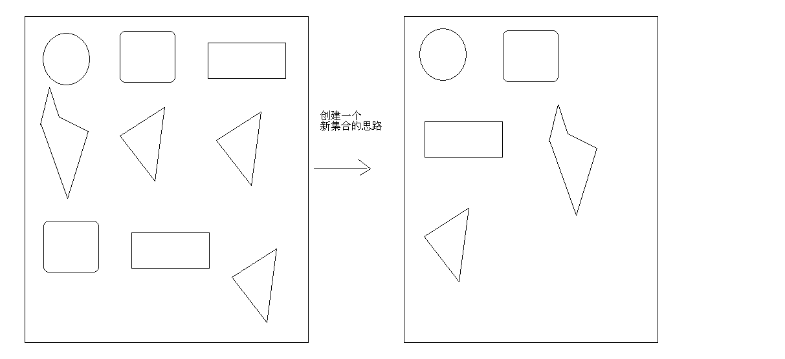
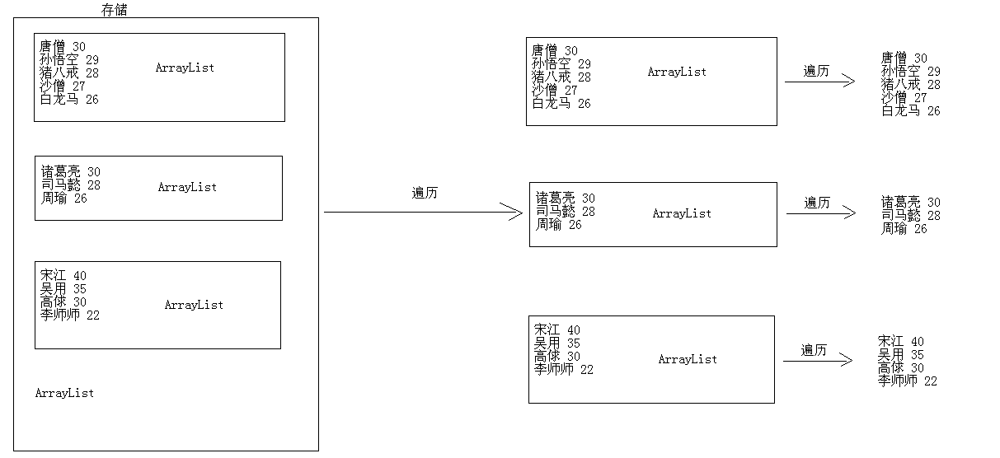

总结¶
1 2 3 4 5 6 7 8 9 10 11 12 13 14 15 16 17 18 19 20 21 22 23 24 25 26 27 28 29 30 31 32 33 34 35 36 37 38 39 40 41 42 43 44 45 46 47 48 49 50 51 52 53 54 55 56 57 58 59 60 61 62 63 64 65 66 67 68 69 70 71 72 73 74 75 76 77 78 79 80 81 82 83 84 85 86 87 88 89 90 91 92 93 94 95 96 97 98 99 100 101 102 103 104 105 106 107 108 109 110 | 1:List的子类(掌握) (1)List的子类特点 ArrayList: 底层数据结构是数组，查询快，增删慢 线程不安全，效率高 Vector: 底层数据结构是数组，查询快，增删慢 线程安全，效率低 LinkedList: 底层数据结构是链表，查询慢，增删快 线程不安全，效率高 (2)ArrayList A:没有特有功能需要学习 B:案例 a:ArrayList存储字符串并遍历 b:ArrayList存储自定义对象并遍历 (3)Vector A:有特有功能 a:添加 public void addElement(E obj) -- add() b:获取 public E elementAt(int index) -- get() public Enumeration<E> elements() -- iterator() B:案例 a:Vector存储字符串并遍历 b:Vector存储自定义对象并遍历 (4)LinkedList A:有特有功能 a:添加 addFirst() addLast() b:删除 removeFirst() removeLast() c:获取 getFirst() getLast() B:案例 a:LinkedList存储字符串并遍历 b:LinkedList存储自定义对象并遍历 (5)案例： A:去除集合中的多个字符串的重复元素 如果字符串的内容相同，即为重复元素 B:去除集合中的多个自定义对象的重复元素 如果自定义对象的成员变量值都相同，即为重复元素 C:用LinkedList模拟一个栈数据结构的集合类，并测试。 你要定义一个集合类，只不过内部可以使用LinkedList来实现。 2:泛型(掌握) (1)泛型概述 是一种把明确类型的工作推迟到创建对象或者调用方法的时候才去明确的特殊的类型。 (2)格式： <数据类型> 注意：该数据类型只能是引用类型。 (3)好处： A:把运行时期的问题提前到了编译期间 B:避免了强制类型转换 C:优化了程序设计，解决了黄色警告线问题，让程序更安全 (4)泛型的前世今生 A:泛型的由来 Object类型作为任意类型的时候，在向下转型的时候，会隐含一个转型问题 B:泛型类 C:泛型方法 D:泛型接口 E:泛型高级通配符 ? ? extends E ? super E (5)我们在哪里使用呢? 一般是在集合中使用。 3:增强for循环(掌握) (1)是for循环的一种 (2)格式： for(元素的数据类型 变量名 : 数组或者Collection集合的对象) { 使用该变量即可，该变量其实就是数组或者集合中的元素。 } (3)好处： 简化了数组和集合的遍历 (4)弊端 增强for循环的目标不能为null。建议在使用前，先判断是否为null。 4:静态导入(了解) (1)可以导入到方法级别的导入 (2)格式： import static 包名....类名.方法名; (3)注意事项： A:方法必须是静态的 B:如果多个类下有同名的方法，就不好区分了，还得加上前缀。 所以一般我们并不使用静态导入，但是一定要能够看懂。 5:可变参数(掌握) (1)如果我们在写方法的时候，参数个数不明确，就应该定义可变参数。 (2)格式： 修饰符 返回值类型 方法名(数据类型... 变量) {} 注意： A:该变量其实是一个数组名 B:如果一个方法有多个参数，并且有可变参数，可变参数必须在最后 (3)Arrays工具类的一个方法 asList()把数组转成集合。 注意：这个集合的长度不能改变。 6:练习(掌握) A:集合的嵌套遍历 B:产生10个1-20之间的随机数，要求随机数不能重复 C:键盘录入多个数据，以0结束，并在控制台输出最大值 7:要掌握的代码 集合存储元素，加入泛型，并可以使用增强for遍历。 |
ArrayList类概述及使用¶
-
ArrayList类概述
• 底层数据结构是数组，查询快，增删慢
• 线程不安全，效率高
-
ArrayList案例
• 存储字符串并遍历
• 存储自定义对象并遍历
1 2 3 4 5 6 7 8 9 10 11 12 13 14 15 16 17 18 19 20 21 22 23 24 25 26 27 28 29 30 31 32 33 34 35 36 37 38 39 40 41 42 43 44 45 46 47 48 | package cn.itcast_01; import java.util.ArrayList; import java.util.Iterator; /* * List的子类特点： * ArrayList: * 底层数据结构是数组，查询快，增删慢 * 线程不安全，效率高 * Vector: * 底层数据结构是数组，查询快，增删慢 * 线程安全，效率低 * LinkedList: * 底层数据结构是链表，查询慢，增删快 * 线程不安全，效率高 * * 案例： * 使用List的任何子类存储字符串或者存储自定义对象并遍历。 * * ArrayList的使用。 * 存储字符串并遍历 */ public class ArrayListDemo { public static void main(String[] args) { // 创建集合对象 ArrayList array = new ArrayList(); // 创建元素对象，并添加元素 array.add("hello"); array.add("world"); array.add("java"); // 遍历 Iterator it = array.iterator(); while (it.hasNext()) { String s = (String) it.next(); System.out.println(s); } System.out.println("-----------"); for (int x = 0; x < array.size(); x++) { String s = (String) array.get(x); //数组的获取功能 System.out.println(s); } } } |
学生类
1 2 3 4 5 6 7 8 9 10 11 12 13 14 15 16 17 18 19 20 21 22 23 24 25 26 27 28 29 30 31 32 33 | package cn.itcast_01; public class Student { private String name; private int age; public Student() { super(); } public Student(String name, int age) { super(); this.name = name; this.age = age; } public String getName() { return name; } public void setName(String name) { this.name = name; } public int getAge() { return age; } public void setAge(int age) { this.age = age; } } |
创建数组对象
1 2 3 4 5 6 7 8 9 10 11 12 13 14 15 16 17 18 19 20 21 22 23 24 25 26 27 28 29 30 31 32 33 34 35 36 37 38 39 40 41 42 43 44 | package cn.itcast_01; import java.util.ArrayList; import java.util.Iterator; /* * ArrayList存储自定义对象并遍历 */ public class ArrayListDemo2 { public static void main(String[] args) { // 创建集合对象 ArrayList array = new ArrayList(); // 创建学生对象 Student s1 = new Student("武松", 30); Student s2 = new Student("鲁智深", 40); Student s3 = new Student("林冲", 36); Student s4 = new Student("杨志", 38); // 添加元素 array.add(s1); array.add(s2); array.add(s3); array.add(s4); // 遍历 Iterator it = array.iterator(); while (it.hasNext()) { Student s = (Student) it.next(); System.out.println(s.getName() + "---" + s.getAge()); } System.out.println("----------------"); for (int x = 0; x < array.size(); x++) { // ClassCastException 注意，千万要搞清楚类型 // String s = (String) array.get(x); // System.out.println(s); Student s = (Student) array.get(x); System.out.println(s.getName() + "---" + s.getAge()); } } } |
执行:
1 2 3 4 5 6 7 8 9 | 武松---30 鲁智深---40 林冲---36 杨志---38 ---------------- 武松---30 鲁智深---40 林冲---36 杨志---38 |
Vector类概述及使用¶
-
Vector类概述
• 底层数据结构是数组，查询快，增删慢
• 线程安全，效率低
-
Vector类特有功能
• public void addElement(E obj) //添加
• public E elementAt(int index) //获取
• public Enumeration elements() //类似于迭代器
-
Vector案例
• 存储字符串并遍历
1 2 3 4 5 6 7 8 9 10 11 12 13 14 15 16 17 18 19 20 21 22 23 24 25 26 27 28 29 30 31 32 33 34 35 36 37 38 39 40 41 42 43 44 45 46 | package cn.itcast_02; import java.util.Enumeration; import java.util.Vector; /* * Vector的特有功能： * 1：添加功能 * public void addElement(Object obj) -- add() * 2：获取功能 * public Object elementAt(int index) -- get() * public Enumeration elements() -- Iterator iterator() * boolean hasMoreElements() hasNext() * Object nextElement() next() * * JDK升级的原因： * A:安全 * B:效率 * C:简化书写 */ public class VectorDemo { public static void main(String[] args) { // 创建集合对象 Vector v = new Vector(); // 这里直接使用就是Vector而不是ArrayList(list和Array) // 添加功能 v.addElement("hello"); v.addElement("world"); v.addElement("java"); //addElement是特有的添加元素的功能 v.add("nihao"); //这个数数组(集合的)统一的添加元素的方法 // 遍历 for (int x = 0; x < v.size(); x++) { String s = (String) v.elementAt(x); System.out.println(s); } System.out.println("------------------"); Enumeration en = v.elements(); // 返回的是实现类的对象,一般都是不用的被迭代器替代了 while (en.hasMoreElements()) { String s = (String) en.nextElement(); System.out.println(s); } } } |
执行
1 2 3 4 5 6 7 8 9 | hello world java nihao ------------------ hello world java nihao |
• 存储自定义对象并遍历
LinkedList类概述及使用¶
-
LinkedList类概述
• 底层数据结构是链表，查询慢，增删快
• 线程不安全，效率高
-
LinkedList类特有功能
• public void addFirst(E e)及addLast(E e)
• public E getFirst()及getLast()
• public E removeFirst()及public E removeLast()
1 2 3 4 5 6 7 8 9 10 11 12 13 14 15 16 17 18 19 20 21 22 23 24 25 26 27 28 29 30 31 32 33 34 35 36 37 38 39 40 41 42 43 44 45 | package cn.itcast_03; import java.util.LinkedList; /* * LinkedList的特有功能： * A:添加功能 * public void addFirst(Object e) //在开头添加 * public void addLast(Object e) //结尾处添加 * B:获取功能 * public Object getFirst() //返回第一个 * public Obejct getLast() //返回最后一个 * C:删除功能 * public Object removeFirst() //删除头,移除并返回头元素 * public Object removeLast() //删除尾 */ public class LinkedListDemo { public static void main(String[] args) { // 创建集合对象 LinkedList link = new LinkedList(); // 创建的是链表对象 // 添加元素 link.add("hello"); // 统一的添加功能 link.add("world"); link.add("java"); // public void addFirst(Object e) // link.addFirst("javaee"); //开始位置添加 // public void addLast(Object e) // link.addLast("android"); //最后面位置添加 // public Object getFirst() System.out.println("getFirst:" + link.getFirst()); // public Obejct getLast() System.out.println("getLast:" + link.getLast()); // public Object removeFirst() // System.out.println("removeFirst:" + link.removeFirst()); // public Object removeLast() // System.out.println("removeLast:" + link.removeLast()); // 输出对象名 System.out.println("link:" + link); } } |
-
LinkedList案例
• 存储字符串并遍历
• 存储自定义对象并遍历
List集合练习¶
-
ArrayList
• 去除集合中字符串的重复值(字符串的内容相同) 
1 2 3 4 5 6 7 8 9 10 11 12 13 14 15 16 17 18 19 20 21 22 23 24 25 26 27 28 29 30 31 32 33 34 35 36 37 38 39 40 41 42 43 44 45 46 47 48 49 50 51 52 53 54 55 56 57 | package cn.itcast_04; import java.util.ArrayList; import java.util.Iterator; /* * ArrayList去除集合中字符串的重复值(字符串的内容相同) * * 分析： * A:创建集合对象 * B:添加多个字符串元素(包含内容相同的) * C:创建新集合 * D:遍历旧集合,获取得到每一个元素 * E:拿这个元素到新集合去找，看有没有 * 有：不搭理它 * 没有：就添加到新集合 * F:遍历新集合 */ public class ArrayListDemo { public static void main(String[] args) { // 创建集合对象 ArrayList array = new ArrayList(); // 添加多个字符串元素(包含内容相同的) array.add("hello"); array.add("world"); array.add("java"); array.add("world"); array.add("java"); array.add("world"); array.add("world"); array.add("world"); array.add("world"); array.add("java"); array.add("world"); // 创建新集合 ArrayList newArray = new ArrayList(); // 遍历旧集合,获取得到每一个元素 Iterator it = array.iterator(); while (it.hasNext()) { String s = (String) it.next(); // 拿这个元素到新集合去找，看有没有 if (!newArray.contains(s)) { //!newArray.contains(s)这个字符串包含在newArray中吗? newArray.add(s); } } // 遍历新集合 for (int x = 0; x < newArray.size(); x++) { String s = (String) newArray.get(x); System.out.println(s); } } } |
1 2 3 4 5 6 7 8 9 10 11 12 13 14 15 16 17 18 19 20 21 22 23 24 25 26 27 28 29 30 31 32 33 34 35 36 37 38 39 40 41 42 43 44 45 46 47 | package cn.itcast_04; import java.util.ArrayList; import java.util.Iterator; /* * 需求：ArrayList去除集合中字符串的重复值(字符串的内容相同) * 要求：不能创建新的集合，就在以前的集合上做。 */ public class ArrayListDemo2 { public static void main(String[] args) { // 创建集合对象 ArrayList array = new ArrayList(); // 添加多个字符串元素(包含内容相同的) array.add("hello"); array.add("world"); array.add("java"); array.add("world"); array.add("java"); array.add("world"); array.add("world"); array.add("world"); array.add("world"); array.add("java"); array.add("world"); // 由选择排序思想引入，我们就可以通过这种思想做这个题目 // 拿0索引的依次和后面的比较，有就把后的干掉 // 同理，拿1索引... for (int x = 0; x < array.size() - 1; x++) { for (int y = x + 1; y < array.size(); y++) { if (array.get(x).equals(array.get(y))) { array.remove(y); // 有就把后的干掉 y--; //移除了一个元素,如果直接y++那么填补到被移除元素的位置的元素就会被跳过比较,造成错误...先y--再y++就还是再比较这个位置的元素,就不会漏缺 } } } // 遍历集合 Iterator it = array.iterator(); while (it.hasNext()) { String s = (String) it.next(); System.out.println(s); } } } |
• 去除集合中自定义对象的重复值(对象的成员变量值都相同)
-
LinkedList
• 请用LinkedList模拟栈数据结构的集合，并测试 学生类添加比较方法(alt+shift+s)自动生成
1 2 3 4 5 6 7 8 9 10 11 12 13 14 15 16 17 18 19 20 21 22 23 24 25 26 27 28 29 30 31 32 33 34 35 36 37 38 39 40 41 42 43 44 45 46 47 48 49 50 51 52 53 | package cn.itcast_04; public class Student { private String name; private int age; public Student() { super(); } public Student(String name, int age) { super(); this.name = name; this.age = age; } public String getName() { return name; } public void setName(String name) { this.name = name; } public int getAge() { return age; } public void setAge(int age) { this.age = age; } @Override // 自动生成的比较方法(比较的是内容不是地址值) public boolean equals(Object obj) { if (this == obj) return true; if (obj == null) return false; if (getClass() != obj.getClass()) return false; Student other = (Student) obj; if (age != other.age) return false; if (name == null) { if (other.name != null) return false; } else if (!name.equals(other.name)) return false; return true; } } |
测试
1 2 3 4 5 6 7 8 9 10 11 12 13 14 15 16 17 18 19 20 21 22 23 24 25 26 27 28 29 30 31 32 33 34 35 36 37 38 39 40 41 42 43 44 45 46 47 48 49 50 51 52 53 54 55 56 57 58 59 60 61 62 63 | package cn.itcast_04; import java.util.ArrayList; import java.util.Iterator; /* * 需求：去除集合中自定义对象的重复值(对象的成员变量值都相同) * * 我们按照和字符串一样的操作，发现出问题了。 * 为什么呢? * 我们必须思考哪里会出问题? * 通过简单的分析，我们知道问题出现在了判断上。 * 而这个判断功能是集合自己提供的，所以我们如果想很清楚的知道它是如何判断的，就应该去看源码。 * contains()方法的底层依赖的是equals()方法。 * 而我们的学生类中没有equals()方法，这个时候，默认使用的是它父亲Object的equals()方法 * Object()的equals()默认比较的是地址值，所以，它们进去了。因为new的东西，地址值都不同。 * 按照我们自己的需求，比较成员变量的值，重写equals()即可。 * 自动生成即可。 */ public class ArrayListDemo3 { public static void main(String[] args) { // 创建集合对象 ArrayList array = new ArrayList(); // 创建学生对象 Student s1 = new Student("林青霞", 27); Student s2 = new Student("林志玲", 40); Student s3 = new Student("凤姐", 35); Student s4 = new Student("芙蓉姐姐", 18); Student s5 = new Student("翠花", 16); Student s6 = new Student("林青霞", 27); Student s7 = new Student("林青霞", 18); // 添加元素 array.add(s1); array.add(s2); array.add(s3); array.add(s4); array.add(s5); array.add(s6); array.add(s7); // 创建新集合 ArrayList newArray = new ArrayList(); // 遍历旧集合,获取得到每一个元素 Iterator it = array.iterator(); while (it.hasNext()) { Student s = (Student) it.next(); // 拿这个元素到新集合去找，看有没有 if (!newArray.contains(s)) { newArray.add(s); } } // 遍历新集合 for (int x = 0; x < newArray.size(); x++) { Student s = (Student) newArray.get(x); System.out.println(s.getName() + "---" + s.getAge()); } } } |
错误的代码
1 2 3 4 5 6 7 8 9 10 11 12 13 14 15 16 17 18 19 20 21 22 23 24 25 26 27 28 29 30 31 32 | package cn.itcast_05; import java.util.Iterator; import java.util.LinkedList; /* *请用LinkedList模拟栈数据结构的集合，并测试 *题目的意思是： * 你自己的定义一个集合类，在这个集合类内部可以使用LinkedList模拟。 */ public class LinkedListDemo { public static void main(String[] args) { // A: LinkedList的特有添加功能addFirst() // B:栈的特点先进后出 // 创建集合对象 // LinkedList link = new LinkedList(); // // // 添加元素 // link.addFirst("hello"); // link.addFirst("world"); // link.addFirst("java"); // // // 遍历 // Iterator it = link.iterator(); // while (it.hasNext()) { // String s = (String) it.next(); // System.out.println(s); // } //上面的代码是错的为什么呢? } } |
实际的代码 先构建栈的集合类
1 2 3 4 5 6 7 8 9 10 11 12 13 14 15 16 17 18 19 20 21 22 23 24 25 26 27 28 29 30 31 | package cn.itcast_05; import java.util.LinkedList; /** * 自定义的栈集合 * * @author 风清扬 * @version V1.0 */ public class MyStack { private LinkedList link; //私有属性 LinkedList link 后面构造的对象都是LinkedList对象 public MyStack() { link = new LinkedList(); } //先进后出 public void add(Object obj) { //添加功能 link.addFirst(obj); //调用的都是link的方法(链表的) } public Object get() { //获取功能 // return link.getFirst(); return link.removeFirst(); } public boolean isEmpty() { //用于遍历判断结束 return link.isEmpty(); } } |
进行测试:
1 2 3 4 5 6 7 8 9 10 11 12 13 14 15 16 17 18 19 20 21 22 23 24 25 26 | package cn.itcast_05; /* * MyStack的测试 */ public class MyStackDemo { public static void main(String[] args) { // 创建集合对象 MyStack ms = new MyStack(); //本质是创建了一个链表对象 // 添加元素 ms.add("hello"); ms.add("world"); ms.add("java"); // System.out.println(ms.get()); //get方法获取元素 // System.out.println(ms.get()); // System.out.println(ms.get()); // NoSuchElementException // System.out.println(ms.get()); while(!ms.isEmpty()){ System.out.println(ms.get()); } } } |
泛型概述及使用¶
-
JDK1.5以后出现的机制
-
泛型出现的原因
-
泛型出现的好处
-
泛型的书写格式
1 2 3 4 5 6 7 8 9 10 11 12 13 14 15 16 17 18 19 20 21 22 23 24 25 26 27 28 29 30 31 32 33 34 35 36 37 38 39 40 41 42 43 44 45 46 47 48 49 50 51 52 53 54 55 56 57 58 59 60 | package cn.itcast_01; import java.util.ArrayList; import java.util.Iterator; /* * ArrayList存储字符串并遍历 * * 我们按照正常的写法来写这个程序， 结果确出错了。 * 为什么呢? * 因为我们开始存储的时候，存储了String和Integer两种类型的数据。 * 而在遍历的时候，我们把它们都当作String类型处理的，做了转换，所以就报错了。 * 但是呢，它在编译期间却没有告诉我们。 * 所以，我就觉得这个设计的不好。 * 回想一下，我们的数组 * String[] strArray = new String[3]; * strArray[0] = "hello"; * strArray[1] = "world"; * strArray[2] = 10; * 集合也模仿着数组的这种做法，在创建对象的时候明确元素的数据类型。这样就不会在有问题了。 * 而这种技术被称为：泛型。 * * 泛型：是一种把类型明确的工作推迟到创建对象或者调用方法的时候才去明确的特殊的类型。参数化类型，把类型当作参数一样的传递。 * 格式： * <数据类型> * 此处的数据类型只能是引用类型。 * 好处： * A:把运行时期的问题提前到了编译期间 * B:避免了强制类型转换 * C:优化了程序设计，解决了黄色警告线 */ public class GenericDemo { public static void main(String[] args) { // 创建 ArrayList<String> array = new ArrayList<String>(); // 添加元素 array.add("hello"); array.add("world"); array.add("java"); // array.add(new Integer(100)); //array.add(10); // JDK5以后的自动装箱 // 等价于：array.add(Integer.valueOf(10)); // 遍历 Iterator<String> it = array.iterator(); while (it.hasNext()) { // ClassCastException // String s = (String) it.next(); String s = it.next(); System.out.println(s); } // 看下面这个代码 // String[] strArray = new String[3]; // strArray[0] = "hello"; // strArray[1] = "world"; // strArray[2] = 10; } } |
执行:
1 2 3 | hello world java |
代码重构
1 2 3 4 5 6 7 8 9 10 11 12 13 14 15 16 17 18 19 20 21 22 23 24 25 26 27 28 29 30 31 | package cn.itcast_02; import java.util.ArrayList; import java.util.Iterator; /* * 泛型在哪些地方使用呢? * 看API，如果类，接口，抽象类后面跟的有<E>就说要使用泛型。一般来说就是在集合中使用。 */ public class ArrayListDemo { public static void main(String[] args) { // 用ArrayList存储字符串元素，并遍历。用泛型改进代码 ArrayList<String> array = new ArrayList<String>(); array.add("hello"); array.add("world"); array.add("java"); Iterator<String> it = array.iterator(); while (it.hasNext()) { String s = it.next(); //不用再进行强行转换 System.out.println(s); } System.out.println("-----------------"); for (int x = 0; x < array.size(); x++) { String s = array.get(x); System.out.println(s); } } } |
student学生类
1 2 3 4 5 6 7 8 9 10 11 12 13 14 15 16 17 18 19 20 21 22 23 24 25 26 27 28 29 30 31 32 33 34 35 36 37 38 39 40 41 | package cn.itcast_02; /** * 这是学生描述类 * * @author 风清扬 * @version V1.0 */ public class Student { // 姓名 private String name; // 年龄 private int age; public Student() { super(); } public Student(String name, int age) { super(); this.name = name; this.age = age; } public String getName() { return name; } public void setName(String name) { this.name = name; } public int getAge() { return age; } public void setAge(int age) { this.age = age; } } |
泛型的集合对象
1 2 3 4 5 6 7 8 9 10 11 12 13 14 15 16 17 18 19 20 21 22 23 24 25 26 27 28 29 30 31 32 33 34 35 36 37 38 39 40 41 42 43 44 45 46 | package cn.itcast_02; import java.util.ArrayList; import java.util.Iterator; /* * 需求：存储自定义对象并遍历。 * * A:创建学生类 * B:创建集合对象 * C:创建元素对象 * D:把元素添加到集合 * E:遍历集合 */ public class ArrayListDemo2 { public static void main(String[] args) { // 创建集合对象 // JDK7的新特性：泛型推断。 // ArrayList<Student> array = new ArrayList<>(); // 但是我不建议这样使用。 ArrayList<Student> array = new ArrayList<Student>(); // 创建元素对象 Student s1 = new Student("曹操", 40); // 后知后觉 Student s2 = new Student("蒋干", 30); // 不知不觉 Student s3 = new Student("诸葛亮", 26);// 先知先觉 // 添加元素 array.add(s1); array.add(s2); array.add(s3); // 遍历 Iterator<Student> it = array.iterator(); //Student将数据类型加进去 while (it.hasNext()) { Student s = it.next(); System.out.println(s.getName() + "---" + s.getAge()); } System.out.println("------------------"); for (int x = 0; x < array.size(); x++) { Student s = array.get(x); System.out.println(s.getName() + "---" + s.getAge()); } } } |
执行
1 2 3 4 5 6 7 | 曹操---40 蒋干---30 诸葛亮---26 ------------------ 曹操---40 蒋干---30 诸葛亮---26 |
- 把前面的集合代码用泛型改进
泛型由来¶
-
为什么会有泛型呢?
• 通过案例引入
• 早期的Object类型可以接收任意的对象类型，但是在实际的使用中，会有类型转换的问题。也就存在这隐患，所以Java提供了泛型来解决这个安全问题。
泛型应用¶
-
泛型类
• 把泛型定义在类上
• 格式:public class 类名<泛型类型1,…>
• 注意:泛型类型必须是引用类型
1 2 3 4 5 6 7 8 9 10 11 12 13 14 15 16 17 18 | package cn.itcast_04; /* * 泛型类：把泛型定义在类上 */ public class ObjectTool<T> { private T obj; //默认是一个object类,但是只要T给定一个数据类型,比如是string类型,那么这个就是一个String泛型 public T getObj() { //alt+shift+s 然后按r生成的方法 return obj; } public void setObj(T obj) { this.obj = obj; } } |
测试泛型类
1 2 3 4 5 6 7 8 9 10 11 12 13 14 15 16 17 18 19 20 21 22 23 24 25 26 27 28 29 30 31 32 33 34 35 36 37 | package cn.itcast_04; /* * 泛型类的测试 */ public class ObjectToolDemo { public static void main(String[] args) { // ObjectTool ot = new ObjectTool(); //不给类型那么默认就是object类 // // ot.setObj(new String("风清扬")); // String s = (String) ot.getObj(); // System.out.println("姓名是：" + s); // // ot.setObj(new Integer(30)); // Integer i = (Integer) ot.getObj(); // System.out.println("年龄是：" + i); // ot.setObj(new String("林青霞")); // // ClassCastException // Integer ii = (Integer) ot.getObj(); // System.out.println("姓名是：" + ii); System.out.println("-------------"); ObjectTool<String> ot = new ObjectTool<String>(); //给定String泛型 // ot.setObj(new Integer(27)); //这个时候编译期间就过不去 ot.setObj(new String("林青霞")); //这里传递一个字符串对象进去 String s = ot.getObj(); System.out.println("姓名是：" + s); ObjectTool<Integer> ot2 = new ObjectTool<Integer>(); // ot2.setObj(new String("风清扬"));//这个时候编译期间就过不去 ot2.setObj(new Integer(27)); Integer i = ot2.getObj(); System.out.println("年龄是：" + i); } } |
-
泛型方法
• 把泛型定义在方法上
• 格式:public <泛型类型> 返回类型方法名(泛型类型 .)
1 2 3 4 5 6 7 8 9 10 11 12 13 14 15 16 17 18 19 20 21 22 23 24 25 26 27 28 29 | package cn.itcast_05; //public class ObjectTool<T> { // // public void show(String s) { //写一个show方法,打印字符串 // // System.out.println(s); // // } // // // // public void show(Integer i) { //进行方法的重载可以打印整型 // // System.out.println(i); // // } // // // // public void show(Boolean b) { //太麻烦了那么多方法重载 // // System.out.println(b); // // } // // public void show(T t) { // System.out.println(t); // } // } /* * 泛型方法：把泛型定义在方法上 */ public class ObjectTool { //不在类里定义 public <T> void show(T t) { //把泛型定义在方法上 System.out.println(t); } } |
使用
1 2 3 4 5 6 7 8 9 10 11 12 13 14 15 16 17 18 19 20 21 22 23 24 25 26 27 28 29 | package cn.itcast_05; public class ObjectToolDemo { public static void main(String[] args) { // ObjectTool ot = new ObjectTool(); // ot.show("hello"); // ot.show(100); // ot.show(true); // ObjectTool<String> ot = new ObjectTool<String>(); // ot.show("hello"); // // ObjectTool<Integer> ot2 = new ObjectTool<Integer>(); // ot2.show(100); // // ObjectTool<Boolean> ot3 = new ObjectTool<Boolean>(); // ot3.show(true); // 如果还听得懂，那就说明泛型类是没有问题的 // 但是呢，谁说了我的方法一定要和类的类型的一致呢? // 我要是类上没有泛型的话，方法还能不能接收任意类型的参数了呢? // 定义泛型方法后 ObjectTool ot = new ObjectTool(); ot.show("hello"); //泛型定义在方法上,传递给什么类型就是什么类型. ot.show(100); ot.show(true); } } |
-
泛型接口
• 把泛型定义在接口上
• 格式:public interface 接口名<泛型类型1…> 泛型接口
1 2 3 4 5 6 7 8 | package cn.itcast_06; /* * 泛型接口：把泛型定义在接口上 */ public interface Inter<T> { //interface接口 public abstract void show(T t); } |
泛型实现类
1 2 3 4 5 6 7 8 9 10 11 12 13 14 15 16 17 18 19 20 21 | package cn.itcast_06; //将接口进行实现的类 //实现类在实现接口的时候 //第一种情况：已经知道该是什么类型的了 //public class InterImpl implements Inter<String> { // // @Override // public void show(String t) { // System.out.println(t); // } // } //第二种情况：还不知道是什么类型的 public class InterImpl<T> implements Inter<T> { //implements是一个类，实现一个接口用的关键字，它是用来实现接口中定义的抽象方法。实现一个接口，必须实现接口中的所有方法。 @Override public void show(T t) { System.out.println(t); } } |
泛型接口的测试
1 2 3 4 5 6 7 8 9 10 11 12 13 14 15 16 | package cn.itcast_06; public class InterDemo { public static void main(String[] args) { // 第一种情况的测试 // Inter<String> i = new InterImpl(); // i.show("hello"); // // 第二种情况的测试 Inter<String> i = new InterImpl<String>(); //前边是接口,后面是实现类 i.show("hello"); Inter<Integer> ii = new InterImpl<Integer>(); ii.show(100); } } |
泛型高级(通配符)¶
-
泛型通配符<?>
• 任意类型，如果没有明确，那么就是Object以及任意的Java类了
-
? extends E
• 向下限定，E及其子类
-
? super E
• 向上限定，E及其父类
1 2 3 4 5 6 7 8 9 10 11 12 13 14 15 16 17 18 19 20 21 22 23 24 25 26 27 28 29 30 31 32 33 34 35 36 37 38 39 40 41 42 43 44 45 46 47 | package cn.itcast_07; import java.util.ArrayList; import java.util.Collection; /* * 泛型高级(通配符) * ?:任意类型，如果没有明确，那么就是Object以及任意的Java类了 * ? extends E:向下限定，E及其子类 * ? super E:向上限定，E极其父类 */ public class GenericDemo { public static void main(String[] args) { // 泛型如果明确的写的时候，前后必须一致 Collection<Object> c1 = new ArrayList<Object>(); // Collection<Object> c2 = new ArrayList<Animal>(); //这里都是不一致的 // Collection<Object> c3 = new ArrayList<Dog>(); // Collection<Object> c4 = new ArrayList<Cat>(); // ?表示任意的类型都是可以的 Collection<?> c5 = new ArrayList<Object>(); Collection<?> c6 = new ArrayList<Animal>(); //?表示任意的类型都是可以的 Collection<?> c7 = new ArrayList<Dog>(); Collection<?> c8 = new ArrayList<Cat>(); // ? extends E:向下限定，E及其子类 // Collection<? extends Animal> c9 = new ArrayList<Object>(); //不能向上限定,这里最高就只能到Animal Collection<? extends Animal> c10 = new ArrayList<Animal>(); Collection<? extends Animal> c11 = new ArrayList<Dog>(); Collection<? extends Animal> c12 = new ArrayList<Cat>(); // ? super E:向上限定，E极其父类 Collection<? super Animal> c13 = new ArrayList<Object>(); Collection<? super Animal> c14 = new ArrayList<Animal>(); // Collection<? super Animal> c15 = new ArrayList<Dog>(); //使用super限定的时候只能向上 // Collection<? super Animal> c16 = new ArrayList<Cat>(); } } class Animal { //animal类继承的是object类 } class Dog extends Animal { } class Cat extends Animal { } |
增强for概述及使用¶
-
增强for概述
• 简化数组和Collection集合的遍历
-
格式：
• for(元素数据类型变量 : 数组或者Collection集合) { 使用变量即可，该变量就是元素
-
好处(})：简化遍历
-
注意事项：增强for的目标要判断是否为null
-
把前面的集合代码的遍历用增强for改进
1 2 3 4 5 6 7 8 9 10 11 12 13 14 15 16 17 18 19 20 21 22 23 24 25 26 27 28 29 30 31 32 33 34 35 36 37 38 39 40 41 42 43 44 45 46 47 48 49 50 51 52 53 54 55 56 57 58 59 60 61 62 63 64 65 66 67 68 69 70 71 | package cn.itcast_01; import java.util.ArrayList; import java.util.List; /* * JDK5的新特性：自动拆装箱,泛型,增强for,静态导入,可变参数,枚举 * * 增强for:是for循环的一种。 * * 格式： * for(元素数据类型 变量 : 数组或者Collection集合) { * 使用变量即可，该变量就是元素 * } * * 好处：简化了数组和集合的遍历。 * * 弊端： 增强for的目标不能为null。 * 如何解决呢?对增强for的目标先进行不为null的判断，然后在使用。 */ public class ForDemo { public static void main(String[] args) { // 定义一个int数组 int[] arr = { 1, 2, 3, 4, 5 }; for (int x = 0; x < arr.length; x++) { System.out.println(arr[x]); } System.out.println("---------------"); // 增强for for (int x : arr) { System.out.println(x); } System.out.println("---------------"); // 定义一个字符串数组 String[] strArray = { "林青霞", "风清扬", "东方不败", "刘意" }; // 增强for for (String s : strArray) { System.out.println(s); } System.out.println("---------------"); // 定义一个集合 ArrayList<String> array = new ArrayList<String>(); array.add("hello"); array.add("world"); array.add("java"); // 增强for for (String s : array) { System.out.println(s); } System.out.println("---------------"); List<String> list = null; // NullPointerException // 这个s是我们从list里面获取出来的，在获取前，它肯定还好做一个判断 // 说白了，这就是迭代器的功能 if (list != null) { //如果这个list不是一个空列表再进行迭代使用 for (String s : list) { System.out.println(s); } } // 增强for其实是用来替代迭代器的 //ConcurrentModificationException // for (String s : array) { // if ("world".equals(s)) { // array.add("javaee"); // } // } // System.out.println("array:" + array); } } |
- ArrayList存储字符串并遍历。要求加入泛型，并用增强for遍历。
- A:迭代器
- B:普通for
- C:增强for
1 2 3 4 5 6 7 8 9 10 11 12 13 14 15 16 17 18 19 20 21 22 23 24 25 26 27 28 29 30 31 32 33 34 35 36 37 38 39 40 41 42 43 | package cn.itcast_01; import java.util.ArrayList; import java.util.Iterator; /* * ArrayList存储字符串并遍历。要求加入泛型，并用增强for遍历。 * A:迭代器 * B:普通for * C:增强for */ public class ArrayListDemo { public static void main(String[] args) { // 创建集合对象 ArrayList<String> array = new ArrayList<String>(); // 创建并添加元素 array.add("hello"); array.add("world"); array.add("java"); // 遍历集合 // 迭代器 Iterator<String> it = array.iterator(); while (it.hasNext()) { String s = it.next(); System.out.println(s); } System.out.println("------------------"); // 普通for for (int x = 0; x < array.size(); x++) { //array.size()是数组的长度 String s = array.get(x); //get方法 System.out.println(s); } System.out.println("------------------"); // 增强for for (String s : array) { System.out.println(s); } } } |
- 需求：ArrayList存储自定义对象并遍历。要求加入泛型，并用增强for遍历。
- A:迭代器
- B:普通for
- C:增强for 学生类
1 2 3 4 5 6 7 8 9 10 11 12 13 14 15 16 17 18 19 20 21 22 23 24 25 26 27 28 29 30 31 32 33 34 35 36 | package cn.itcast_01; public class Student { // 成员变量 private String name; private int age; // 构造方法 public Student() { super(); } public Student(String name, int age) { super(); this.name = name; this.age = age; } // 成员方法 // getXxx()/setXxx() public String getName() { return name; } public void setName(String name) { this.name = name; } public int getAge() { return age; } public void setAge(int age) { this.age = age; } } |
测试(最后都会被优化成迭代器)
1 2 3 4 5 6 7 8 9 10 11 12 13 14 15 16 17 18 19 20 21 22 23 24 25 26 27 28 29 30 31 32 33 34 35 36 37 38 39 40 41 42 43 44 45 46 47 48 49 50 51 52 53 54 55 | package cn.itcast_01; import java.util.ArrayList; import java.util.Iterator; /* * 需求：ArrayList存储自定义对象并遍历。要求加入泛型，并用增强for遍历。 * A:迭代器 * B:普通for * C:增强for * * LinkedList,Vector,Colleciton,List等存储我还讲吗?不讲解了，但是要求你们练习。 * * 增强for是用来替迭代器。 */ public class ArrayListDemo2 { public static void main(String[] args) { // 创建集合对象 ArrayList<Student> array = new ArrayList<Student>(); // 创建学生对象 Student s1 = new Student("林青霞", 27); Student s2 = new Student("貂蝉", 22); Student s3 = new Student("杨玉环", 24); Student s4 = new Student("西施", 21); Student s5 = new Student("王昭君", 23); // 把学生对象添加到集合中 array.add(s1); array.add(s2); array.add(s3); array.add(s4); array.add(s5); // 迭代器 Iterator<Student> it = array.iterator(); while (it.hasNext()) { Student s = it.next(); System.out.println(s.getName() + "---" + s.getAge()); } System.out.println("---------------"); // 普通for for (int x = 0; x < array.size(); x++) { Student s = array.get(x); //这里获取出来的还是学生对象 System.out.println(s.getName() + "---" + s.getAge()); //使用的是学生类的各种方法 } System.out.println("---------------"); // 增强for for (Student s : array) { //数据类型: 集合 System.out.println(s.getName() + "---" + s.getAge()); } } } |
静态导入概述及使用¶
-
静态导入概述
• 格式：import static 包名….类名.方法名;
• 可以直接导入到方法的级别
-
注意事项
• 方法必须是静态的
• 如果有多个同名的静态方法，容易不知道使用谁?这个时候要使用，必须加前缀。由此可见，意义不大，所以一般不用，但是要能看懂。
1 2 3 4 5 6 7 8 9 10 11 12 13 14 15 16 17 18 19 20 21 22 23 24 25 26 27 28 29 30 31 32 33 34 35 36 37 38 39 40 | package cn.itcast_02; /* * 静态导入： * 格式：import static 包名….类名.方法名; * 可以直接导入到方法的级别 * * 静态导入的注意事项： * A:方法必须是静态的 * B:如果有多个同名的静态方法，容易不知道使用谁?这个时候要使用，必须加前缀。由此可见，意义不大，所以一般不用，但是要能看懂。 */ import static java.lang.Math.abs; import static java.lang.Math.pow; import static java.lang.Math.max; //错误 //import static java.util.ArrayList.add; //只能导入静态的方法 public class StaticImportDemo { public static void main(String[] args) { // System.out.println(java.lang.Math.abs(-100)); // System.out.println(java.lang.Math.pow(2, 3)); // System.out.println(java.lang.Math.max(20, 30)); // 太复杂，我们就引入到import // System.out.println(Math.abs(-100)); // System.out.println(Math.pow(2, 3)); // System.out.println(Math.max(20, 30)); // 太复杂，有更简单 // System.out.println(abs(-100)); System.out.println(java.lang.Math.abs(-100)); System.out.println(pow(2, 3)); System.out.println(max(20, 30)); } public static void abs(String s){ System.out.println(s); } } |
可变参数概述及使用¶
-
可变参数概述
• 定义方法的时候不知道该定义多少个参数
-
格式
• 修饰符返回值类型方法名(数据类型… 变量名){}
• 注意：
• 这里的变量其实是一个数组
• 如果一个方法有可变参数，并且有多个参数，那么，可变参数肯定是最后一个
1 2 3 4 5 6 7 8 9 10 11 12 13 14 15 16 17 18 19 20 21 22 23 24 25 26 27 28 29 30 31 32 33 34 35 36 37 38 39 40 41 42 43 44 45 46 47 48 49 50 51 52 53 54 55 56 57 58 59 60 61 62 63 64 65 | package cn.itcast_03; /* * 可变参数：定义方法的时候不知道该定义多少个参数 * 格式： * 修饰符 返回值类型 方法名(数据类型… 变量名){ * * } * * 注意： * 这里的变量其实是一个数组 * 如果一个方法有可变参数，并且有多个参数，那么，可变参数肯定是最后一个 */ public class ArgsDemo { public static void main(String[] args) { // 2个数据求和 int a = 10; int b = 20; int result = sum(a, b); System.out.println("result:" + result); // 3个数据的求和 int c = 30; result = sum(a, b, c); System.out.println("result:" + result); // 4个数据的求和 int d = 30; result = sum(a, b, c, d); System.out.println("result:" + result); // 需求：我要写一个求和的功能，到底是几个数据求和呢，我不太清楚，但是我知道在调用的时候我肯定就知道了 // 为了解决这个问题，Java就提供了一个东西：可变参数 result = sum(a, b, c, d, 40); System.out.println("result:" + result); result = sum(a, b, c, d, 40, 50); System.out.println("result:" + result); } public static int sum(int... a) { // System.out.println(a); //return 0; int s = 0; //最终的求和的返回值 for(int x : a){ //这个a传递进来的是一个数组,那么就遍历这个数组进行相加就好了 s +=x; } return s; } // public static int sum(int a, int b, int c, int d) { // return a + b + c + d; // } // // public static int sum(int a, int b, int c) { // return a + b + c; // } // // public static int sum(int a, int b) { // return a + b; // } } |
-
Arrays工具类中的一个方法
• public static
List asList(T... a)
1 2 3 4 5 6 7 8 9 10 11 12 13 14 15 16 17 18 19 20 21 22 23 24 25 26 27 28 29 | package cn.itcast_03; import java.util.Arrays; import java.util.List; /* * public static <T> List<T> asList(T... a):把数组转成集合 ...集合中有将集合转换成数组的方法toArray() * * 注意事项： * 虽然可以把数组转成集合，但是集合的长度不能改变。 */ public class ArraysDemo { public static void main(String[] args) { // 定义一个数组 // String[] strArray = { "hello", "world", "java" }; // List<String> list = Arrays.asList(strArray);//Arraylist 是集合,array是数组 List<String> list = Arrays.asList("hello", "world", "java");//可变参 // UnsupportedOperationException // list.add("javaee"); //长度不能变 // UnsupportedOperationException // list.remove(1); list.set(1, "javaee"); //但是可以改变 for (String s : list) { System.out.println(s); } } } |
List集合练习2¶
- 集合的嵌套遍历 
1 2 3 4 5 6 7 8 9 10 11 12 13 14 15 16 17 18 19 20 21 22 23 24 25 26 27 28 29 30 31 32 33 34 35 36 37 38 39 40 41 42 43 44 45 46 47 48 49 50 51 52 53 54 55 56 57 58 59 60 61 62 63 64 65 66 67 68 69 70 | package cn.itcast_01; import java.util.ArrayList; /* * 集合的嵌套遍历 * 需求： * 我们班有学生，每一个学生是不是一个对象。所以我们可以使用一个集合表示我们班级的学生。ArrayList<Student> * 但是呢，我们旁边是不是还有班级，每个班级是不是也是一个ArrayList<Student>。 * 而我现在有多个ArrayList<Student>。也要用集合存储，怎么办呢? * 就是这个样子的：ArrayList<ArrayList<Student>> */ public class ArrayListDemo { public static void main(String[] args) { // 创建大集合,将集合存到集合中,泛型里面要写的是一个集合泛型 ArrayList<ArrayList<Student>> bigArrayList = new ArrayList<ArrayList<Student>>(); // 创建第一个班级的学生集合 ArrayList<Student> firstArrayList = new ArrayList<Student>(); // 创建学生 Student s1 = new Student("唐僧", 30); Student s2 = new Student("孙悟空", 29); Student s3 = new Student("猪八戒", 28); Student s4 = new Student("沙僧", 27); Student s5 = new Student("白龙马", 26); // 学生进班 firstArrayList.add(s1); firstArrayList.add(s2); firstArrayList.add(s3); firstArrayList.add(s4); firstArrayList.add(s5); // 把第一个班级存储到学生系统中 bigArrayList.add(firstArrayList); // 创建第二个班级的学生集合 ArrayList<Student> secondArrayList = new ArrayList<Student>(); // 创建学生 Student s11 = new Student("诸葛亮", 30); Student s22 = new Student("司马懿", 28); Student s33 = new Student("周瑜", 26); // 学生进班 secondArrayList.add(s11); secondArrayList.add(s22); secondArrayList.add(s33); // 把第二个班级存储到学生系统中 bigArrayList.add(secondArrayList); // 创建第三个班级的学生集合 ArrayList<Student> thirdArrayList = new ArrayList<Student>(); // 创建学生 Student s111 = new Student("宋江", 40); Student s222 = new Student("吴用", 35); Student s333 = new Student("高俅", 30); Student s444 = new Student("李师师", 22); // 学生进班 thirdArrayList.add(s111); thirdArrayList.add(s222); thirdArrayList.add(s333); thirdArrayList.add(s444); // 把第三个班级存储到学生系统中 bigArrayList.add(thirdArrayList); // 遍历集合(嵌套for) for (ArrayList<Student> array : bigArrayList) { for (Student s : array) { System.out.println(s.getName() + "---" + s.getAge()); } } } } |
执行
1 2 3 4 5 6 7 8 9 10 11 12 | 唐僧---30 孙悟空---29 猪八戒---28 沙僧---27 白龙马---26 诸葛亮---30 司马懿---28 周瑜---26 宋江---40 吴用---35 高俅---30 李师师---22 |
- 获取10个1-20之间的随机数，要求不能重复
1 2 3 4 5 6 7 8 9 10 11 12 13 14 15 16 17 18 19 20 21 22 23 24 25 26 27 28 29 30 31 32 33 34 35 36 37 38 39 40 41 42 43 44 45 46 47 48 49 50 51 52 | package cn.itcast_02; import java.util.ArrayList; import java.util.Random; /* * 获取10个1-20之间的随机数，要求不能重复 * * 用数组实现，但是数组的长度是固定的，长度不好确定。 * 所以我们使用集合实现。 * * 分析： * A:创建产生随机数的对象 * B:创建一个存储随机数的集合。 * C:定义一个统计变量。从0开始。 * D:判断统计遍历是否小于10 * 是:先产生一个随机数，判断该随机数在集合中是否存在。 * 如果不存在:就添加，统计变量++。 * 如果存在:就不搭理它。 * 否：不搭理它 * E:遍历集合 */ public class RandomDemo { public static void main(String[] args) { // 创建产生随机数的对象 Random r = new Random(); //使用的是Random类产生随机数 // 创建一个存储随机数的集合。 ArrayList<Integer> array = new ArrayList<Integer>(); // 定义一个统计变量。从0开始。 int count = 0; // 判断统计遍历是否小于10 while (count < 10) { //先产生一个随机数 int number = r.nextInt(20) + 1; //判断该随机数在集合中是否存在。 if(!array.contains(number)){ //如果不存在:就添加，统计变量++。 array.add(number); count++; } } //遍历集合 for(Integer i : array){ System.out.println(i); } } } |
执行
1 2 3 4 5 6 7 8 9 10 | 15 7 9 14 12 1 5 20 16 17 |
- 键盘录入多个数据，以0结束，要求在控制台输出这多个数据中的最大值
1 2 3 4 5 6 7 8 9 10 11 12 13 14 15 16 17 18 19 20 21 22 23 24 25 26 27 28 29 30 31 32 33 34 35 36 37 38 39 40 41 42 43 44 45 46 47 48 49 50 51 52 53 54 55 56 57 58 59 60 61 62 63 64 65 66 67 68 69 | package cn.itcast_03; import java.util.ArrayList; import java.util.Arrays; import java.util.Scanner; /* * 键盘录入多个数据，以0结束，要求在控制台输出这多个数据中的最大值 * * 分析： * A:创建键盘录入数据对象 * B:键盘录入多个数据,我们不知道多少个，所以用集合存储 * C:以0结束,这个简单，只要键盘录入的数据是0，我就不继续录入数据了 * D:把集合转成数组 * E:对数组排序 * F:获取该数组中的最大索引的值 */ public class ArrayListDemo { public static void main(String[] args) { // 创建键盘录入数据对象 Scanner sc = new Scanner(System.in); // 键盘录入多个数据,我们不知道多少个，所以用集合存储 ArrayList<Integer> array = new ArrayList<Integer>(); // 以0结束,这个简单，只要键盘录入的数据是0，我就不继续录入数据了 while (true) { System.out.println("请输入数据："); int number = sc.nextInt(); if (number != 0) { array.add(number); } else { break; } } // 把集合转成数组 // public <T> T[] toArray(T[] a) //一般不用但是可以实现 Integer[] i = new Integer[array.size()]; //建立一个数组用于接收集合的转换 // Integer[] ii = array.toArray(i); array.toArray(i); //直接调用toArray()将array转换成数组给i // System.out.println(i); // System.out.println(ii); // 对数组排序 // public static void sort(Object[] a) Arrays.sort(i); //调用数组排序的方法 // 获取该数组中的最大索引的值 System.out.println("数组是：" + arrayToString(i) + "最大值是:" + i[i.length - 1]); } public static String arrayToString(Integer[] i) { //将数组编程一个字符串(输出好看) StringBuilder sb = new StringBuilder(); sb.append("["); for (int x = 0; x < i.length; x++) { if (x == i.length - 1) { sb.append(i[x]); } else { sb.append(i[x]).append(", "); } } sb.append("]"); return sb.toString(); } } |
执行
1 2 3 4 5 6 7 8 9 | 请输入数据： 1 请输入数据： 2 请输入数据： 3 请输入数据： 0 数组是：[1, 2, 3]最大值是:3 |